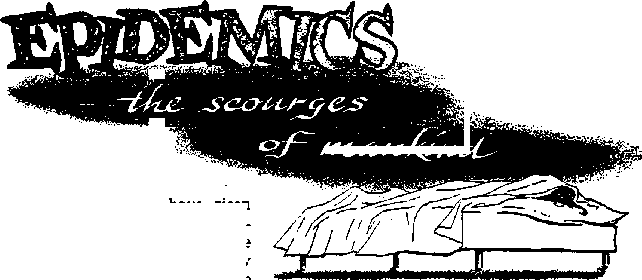
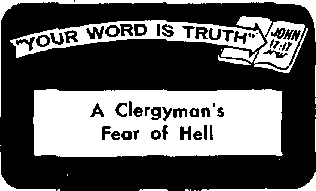

\Z'
CAN YOU TALK WITH THE DEAD?
i he cr io a c;r• e?>t*i
The Talk War and the Silent War
' = \v.vL.U oi A’rj’5 ::nd evfionage
Peaceful Atoms at Work
Epidemics—the Scourges of Mankind
News sources that are able to keep you awake to the vital issues of our times must be unfettered by censorship and selfish Interests. “Awake I” has no fetters. It recognizes facts, faces facia, is free to publish facts. It Is not bound by political ambitions or obligations; it is unhampered by advertisers whose toes must not be trodden on; it is unprejudiced by traditional creeds. This Journal keeps itself free that it may speak freely to you. But ft does not abuse its freedom. It maintains integrity to truth.
“Awake 1” uses the regular news channels, but is not dependent on them. Its own correspondents are on all continents, in scores of nations. Frdln the four corners of the earth their uncensored, on'the-scenes reports come to you through these columns. This Journal’s viewpoint is not narrow, but is international. It is read in many nations, in many languages, by persdns of all ages. Through its pages many fields of knowledge pass in review—government, commerce, religion, history, geography, science, social conditions, natural wonders—why, its coverage is as broad as the earth and as high as the heavens.
“Awake I” pledges itself to righteous principles, to exposing hidden foes and subtle dangers, to championing freedom for all, to comforting mourners and strengthening those disheartened by the failures of a delinquent world, reflecting sure hope for the establishment of a righteous New World.
Get acquainted with “Awake!” Keep awake by reading “Awake!”
PUBLISH!!, SEMIMONTHLY BY WATCHTOWER BIBLE AND TRACT SOCIETY, INC.
117 Adama Street Brooklyn 1, N, Y., TL 8, A,
N> H, Knorr, PteHtfent Grant Suiter, Secretary
Printing this iatue; 1,760,000
Five cents a copy
•ttef laniiMn la vhhh "Awiti!” h psbllihed: Semimonthly—Atrlhaans, Finnish. French, Gefniao, JtaJiAiL Norveslan, fipauhh, Swedish, Monthly—Dmiah, Greek, Japanese, Portuguese,
Ukrainlin.
Offices Yevly subscription rite
America, U.S., 1U Adame BL, Brooklyn 1, N.Y. $1 Aittralla, 11 Sererfnrd Bflo BtralNleld, N.S.W. 8/-Ctnads, 150 BrldgeJand Are., Park Road P.O.,
TorticCu 10, fl
England, 34 Craven Terries, London, W. 2 T/-
New Zuland, G.P.O. Box go, Wellington, C. 1 7/-Soith Africa, Private Bag, Elsodsfontelh. TvL 7/-
fltmlttnnots should t* rat to office Io «Hm-tif in cnmpllanco Mth regiilatlMis to guarantee late delivery of money. Bemhlanees are accepted at from xwnirlftj wiwe jjp tJPce is kvaied, by tntematlDftal money order only, Bnbacriptlcn rates iti different countries are here stated in local currency. Natl re of expiration (with retwwal blank) Is aent at least two Ikues before eubflcriptlnn ei-pifw. Chwf* at aidrw* when sent to our office mayt be expected effective within one month. Send your old as well ai new address.
Entered as Second-class matter at Brooklyn, N.Y. Printed Id U SA
CONTENTS
The Wisdom of Helpful Listening
Laughing at the Law of Averages
The Talk War and the Silent War
Avoiding That Transparent Personality 2D
Epidemics—the Scourges of Mankind 21
“Your Word Is Truth”
Jehovah’s Witnesses Preach in All
WISDOM
> MAN has an instinctive desire to be help' ful. More than that, for his own emotional well-being man needs to give expression to generous impulses. This instinctive desire to be helpful might be adduced as one of the proofs that man was created in the image of God, the great Helper and Doer of good deeds. Of course, in some this instinct is stronger than in others, as is apparent in the generous way in which some respond to appeals for help. Such show themselves to be true friends and brothers to their neighbor, for “a friend loves at all times, and a brother is born for adversity.”—Proverbs 17:17, Rev. Stan. Ver.
Selfish persons are prone to exploit this instinct to be helpful in others. Especially has religion been used by many to take advantage of this need to give, to express generosity. Fraudulent charities also reap much gain therefrom, even as do those who pose as being indigent or handicapped when they are not. Incidentally, should someone have taken advantage of your generosity or liberality, do not feel overly chagrined at it, for better it is to be taken advantage of than to be stingy or unduly
I tfe HELPFUL; J LISTENING
S ......<!;■?
suspicious. Better it is to make a mistake of the head than one of the heart.
While many thus selfishly exploit man’s instinctive need to give, others have wisely utilized it for unselfish ends. Thus we are told of a prison warden who won over dangerous criminals by appealing to this instinct in them. He would ask these criminals to do him certain favors and, strange as it may seem, thereafter they became easier to handle and even became his friends. Try it sometime on one who may seem to hear you a grudge. It will require humility and tact but the results will most likely surprise you.
Perhaps the most frequent way in which most of us give expression to our instinctive desire to help is by offering advice to one who may be disturbed, in a quandary as to what to do or rebelling at his lot. And good advice, in line with the principles laid down in God’s Word, can be very helpful. However, it should be borne in mind that it does not always follow that a person suffering mental distress immediately needs advifce and much of it. More often than not such a person is unable to accept advice, much less see its merit and how he can best apply it.
At such a time we need more than merely a sincere desire to be helpful. We also need patience, tact and loving understand-
Ing, sensitive mental discernment. Then the words of wise King Solomon apply: "God is in heaven, and you upon earth; therefore let your words be few.” (Ecclesiastes 5:2, Rev. Stan. Ver.) Perhaps more than anything else that is needed at such a time is a patient, loving and understanding ear; one that is willing to listen. The distressed one may even need encouragement to bring himself to express just what is troubling him. Then also is a time for remembering that “love is long-suffering and obliging,” and that “it bears all things, believes all things, hopes all things, endures all things.”—1 Corinthians 13:4, 7, New World Trans.
By exercising loving patience and selfcontrol we aid the distressed one to express himself, thereby bringing his worries and problem out in the open, which is what he very much needs to do. No doubt he has been judging his problem in the light of his own knowledge and experience and in a one-sided way, because he himself is so bound up with it. He may therefore have gone over it again and again in his mind but made no progress because of his going around in circles, as it were, losing all perspective. But upon expressing his thoughts in the presence of another he becomes aware of his true situation, is able to see his weaknesses or the cause of the difficulty and able to see how his problem appears to others. And should his problem be that of a guilty conscience, he is helped by his confessing his faults to another. That is why God’s Word counsels: “Openly
afess your sins to one another and pray for one another.”—James 5:16, New World Trans.
Another advantage gained by having the troubled one express himself, indicating the wisdom of helpful listening, is that thereby emotional tension and stress are released, making it less likely that he will do something foolish or rash. Thereby he also makes room for other ideas, for the helpful and constructive and tactful suggestions that the helpful listener will eventually offer. In fact, his own mind may even suggest the right solution to his problem then. Also, by his own emotional tension’s being lessened there is less likelihood of strong conflict between his own view of matters and those presented by the helpful listener.
And finally, by helpfully listening instead of at once eagerly offering advice, not only shall we become better acquainted with the troubled one's problem but we shall have time to reflect and draw from the recesses of cur memories that which will prove to be of the greatest help to the one whom we would aid. Yes, whenever we find our instinctive desire to be helpful making us eager to offer advice, let us restrain ourselves and note whether or not it would be wiser first to do some helpful listening.
“When words are many, transgression is not lacking, but he who restrains his lips is prudent. The tongue of the righteous is choice silver,”—Proverbs 10:19, 20, Rev. Stan. Ver.
LAUGHING AT THE LAW OF AVERAGES
In Edinburg, Indiana, Joe Lain has decided to forget about the law of averages —at least when fish are involved. He was boating with a friend on Sugar Creek when a two-and-a-half-pound small bass jumped into his boat and flopped around. *'That wouldn’t happen again in a million years,” said Joe. No sooner had he gotten those words out of his mouth when a two-pound bass landed in the boat beside the first
something about mpn [hoi ikr«w:> death? And therefore can you talk tdlh the dead?
Materialism insists that at death man actually dies, he ceases to exist, and therefore you cannot talk with the dead. And it holds not only that the dead are extinct and will always remain extinct, but that there is no spirit world, no God, no angels and no demons.
Spiritualism claims that at death man only seems to die; that there is something about man that survives death and that under favorable conditions a go-between, known as a “medium,” can arrange for you to talk with the dead.
Tending to support the position of spiritualism are the results procured by members of the British and the American Society for Psychical Research, particularly during the last quarter of the nineteenth and the first quarter of the twentieth century. Among the eminent British and American scientists that interested themselves in the subject and came away either convinced that there was survival after death or at a loss to explain what they saw were Sir Oliver Lodge, Sir William Crookes, Dr. W. J. Crawford of Queens University, Belfast, Ireland, Dr. Richard Hodgson of Cambridge, Dr. W. F. Prince, William James of Harvard and Prof. James H. Hyslop of Columbia University.
Among the foremost mediums of modem times was D. D, Home, who died in 1886. He amazed distinguished audiences throughout the United States and Europe by such feats as floating in air, or levitation, by causing objects to float through the air, by playing musical instruments without touching them, etc. He welcomed scientific investigation and was never proved fraudulent. Aside from spiritualism his powers were never given a satisfactory explanation.
Rivaling Mr, Home, if that is possible, was Mrs. L. E. Piper, described as “America’s Most Famous Medium" in the American Mercury, May 1950, at which time Mrs. Piper was still living, being ninety-one years old. Among the many items related about her is the one concerning Mrs. Oliver Lodge, who had lost her pocketbook some days before Mrs. Piper arrived in England. Mrs. Piper at once told her where she had misplaced it. On one occasion Professor Hyslop called, wearing a mask and taking his seat behind her without saying a word. She at once called out his name and that of his father and then proceeded to tell all manner of details regarding his family, all of which were true.
At the request of British scientists she made special trips to England, where she gave many sittings for leading scientists there, even as she had for leading scien-
tists in the United States. Scientists took 3,000 pages of testimony in the course of forty years and spent more than $150,000 trying to prove her wrong, but not once were they able to detect any fraud. She could describe the exact movements of persons living long distances away and time and again told facts to persons regarding their affairs that they had not known at the time. Time and again her belongings Were searched and detectives followed her, but never was a clue found as to how she gained all this amazing information.
In addition to mediums’ being able to cause objects to float, as did D. D. Home, and being able to divulge information not obtainable in ordinary ways, at times mediums also produce a protoplasm known as ectoplasm. The Encyclopaedia Britannica tells of this ectoplasm’s having been photographed. At times it appears in the form of a dead relative and even simulates his voice. At the time of such a seance where the ectoplasm has appeared scientists have weighed it and the medium and have found that the ectoplasm weighed as much as the medium had lost in weight.
Professor Hyslop, in his book Contact with the Other World, states that “history shows that every intelligent man who has gone into this investigation, if he gave it adequate examination at all, has come out believing in spirits,” even as he had done. That was thirty-five years ago. Leading scientific work in the United States today is being done by Dr. J. B. Rhine at Duke University, and while neither he nor all his colleagues will go on record as unanimously and unequivocally supporting survival after death, they have definitely established “an extra-physical element," and are still open to conviction as regards survival after death.—The Evening Star (Washington, D.C.), February 6, 1956.
Automatic writing, the ouija board, the crystal ball, astrology, clairvoyance and clairaudience are all claimed to have furnished proof for survival after death. Spiritualists also point to the fact that nearly all the religions of the world teach survival after death and that it goes back to earliest times. Some spiritualists even make the claim that the Bible teaches spiritualism.
The Bible on Survival After Death
Members of the British and American societies for psychical research are convinced that there are facts for which a materialistic philosophy absolutely has no explanation. Spiritualism claims that the facts prove that there is survival after death and that the living can talk with the dead. What does the Bible say? The Bible’s position is that at death man actually dies, that there is no survival after death and therefore you cannot talk with the dead.
To begin with, the Bible shows that a soul is simply a creature and so refers to the lower animals as well as man as souls. Man therefore fs a soul, he has soul only in the sense that he has life. That is why we read that at creation “man came to be a living soul.” Yes, “be” not “receive,” a living soul.—Genesis 2:7; 1:20, 30, New World Trans.
The soul, Adam, was warned that if he ate of the fruit of a certain tree he would die, cease to exist. He ate and was sentenced to return to the ground from which he was taken. Before Adam was created there was no soul Adam; he did not exist. After he returned to the ground he ceased to exist; there was no soul Adam. (Genesis 2:16, 17; 3:17-19) A living soul might be likened to a candle that is lit. As long as it is lit it can light other candles, even as man, as long as he is living, can reproduce his kind. When the light goes out it ceases to exist, even as when man dies he ceases
to exist. The oxygen is there' and the candle, but no light. And so with man, the body and the oxygen are there but as a living soul he has ceased to exist.
Since both man and beast are souls and die as souls it follows that earthly souls are not immortal. And so we find the plain statement, “The soul that sinneth, it shall die.” (Ezekiel 18:4) And that is why we read that in death there is neither consciousness nor activity and that in death man has no pre-eminence above the lower animals. (Ecclesiastes 9:5, 10; 3:19-21) Life is a gift from God, and a gift implies the privilege of rejecting it. That is why God told the Israelites: “I have put life and death before you, ... you must choose life in order that you may keep alive.” —Deuteronomy 30:19, New World Trans.
As for immortality, the Bible shows that God is very selective about bestowing this quality. He himself is immortal. And he gave his Son immortality at his resurrection, Paul writing that Jesus was the only one then having immortality, that is, aside from God. (1 Timothy 6:16) However, Paul also showed that immortality was a prize that anointed footstep followers of Jesus Christ would receive in the resurrection, further proving that they do not possess it at the present time: “For this which is corruptible must put on incorruption, and this which is mortal must put on immortality.”—1 Corinthians 15:53, New World Trans.
A Case of Mistaken Identity
If death means extinction, then how can we explain all the phenomena previously referred to, which spiritualism claims to be proof of survival after death and for which materialism has no answer? The Bible shows that it is a case of mistaken identity. Personalities are involved, not those of humans once on earth, but invisible, wicked spirit personalities, wicked angels or demons, the head of whom is Satan the Devil. Many today, however, ridicule any reference to a personal Devil and demons as a medieval superstition.
But why should it seem difficult to accept what the Bible has to say about wicked invisible personalities? Does it not plainly show that God, though invisible, exists, and does it not repeatedly make reference to invisible creatures termed angels? And do we not read of the Devil’s tempting Jesus in the wilderness? Those temptations could not have come from Jesus’ own mind. Besides, in one of them Satan offered Jesus all the kingdoms of the world “If you fall down and do an act of worship to me.” Could Jesus fall down to his own thoughts? Ridiculous! And does not Peter describe the Devil as "a roaring lion, seeking to devour”? (Matthew 4:9; 1 Peter 5:8, New World Trans.) He was once a righteous spirit son of God who made himself into Satan the Devil by his ambitious and wicked rebellion against God, as shown at Ezekiel 28:12-16, Similarly with the demons.
Angels are repeatedly referred to in the Bible as the “sons of God." These sons of God shouted for joy at the creation of earth, (Job 38:4, 7) Some of these sons of God were so enamored of the beautiful women upon earth before the flood of Noah’s day that they left their heavenly places, came to earth, materialized as humans and took such human wives as they chose. The result of that union was a race of giants that filled the earth with wickedness and violence.—Genesis 6:2, 4, 5.
All this is supported by the words of Jude and Peter: “The angels that did not keep their original position but forsook their own proper dwelling-place [God] has reserved with eternal bonds under dense darkness for the judgment of the great day.” “God did not hold back from punishing the angels that sinned, but, by throw-
ing them into Tartarus, delivered them to pits of dense darkness to be reserved for judgment; and he did not hold back from punishing an ancient world, but kept Noah, a preacher of righteousness, safe with seven others/*—Jude 6; 2 Peter 2:4, 5, New World Trans,
Since the Deluge, no longer able to materialize as they once could, these wicked spirit personalities, termed “demons” in the Bible, Wave kept in touch with humans by means of witches or mediums and have claimed to be the spirits of humans once living on earth. Jehovah’s law by Moses forbade any Israelite to turn himself into a witch, a spirit medium, or a foreteller of events or even to consult any such, on the penalty of death. (Leviticus 19:31; 20:6) One of the reasons why King Saul was rejected and met an untimely death was that he consulted a witch, and supposedly got in touch with dead Samuel.—1 Samuel 28: 3-25; 1 Chronicles 10:13, 14.
Jesus, when on earth, came in touch with persons obsessed by such demons time and again. Some would claim that such were merely cases of insanity, but the Bible record does not allow for any such conclusion: “They brought him all the ailing ones afflicted with various diseases and severe complaints, demon-possessed and lunatic and paralyzed persons, and he cured them.” These demons recognized Jesus, saying to him, “What have we to do with you, Son of God?” (Matthew 4:24; 8:29, New World Trans,) Christians are repeatedly warned not to have anything to do with spiritism or demonism. To trifle with them brings on Jehovah’s displeasure and eventual destruction at his hands and may even now result in insanity. —1 Corinthians 10:20-22; Galatians 5:19-21; Revelation 22:15.
Fulfillment of Bible prophecy indicates that at the present time Satan and his de^ mens are confined to the “land of Magog,” in the vicinity of this globe. (Ezekiel chapters 38 and 39) At the battle of Armageddon, so close at hand, they will be hurled into an abyss for a thousand years, chained in deathlike inactivity. Loosed for a little time to permit their testing of mankind, these demons, together with all wicked humans, will then suffer annihilation, destruction, the second death.—Revelation 16:14, 16; 20:1-3, 7-9, 14, 15.
So do not be deceived by any claims that you can talk with the dead, which are based on the false premise that there is survival after death.* Avoid spiritism as you would poison. As for your loved ones who have died, God’s Word holds out the hope that you may see them in his New World, to which they will return by a resurrection: “Do not marvel at this, because the hour is coming in which all those in the memorial tombs will hear [Jesus*] voice and come out.”—John 5:28, 29, New World Trans.
* For a more complete consideration of this subject See the Watch Tower Society’s 96-page booklet What Do tha Scriptures Say About "Survival After Death-”?
ENOUGH!
One wandering Indian priest may look twice before he gives a blessing again. A traveling Indian holy man recently gave the traditional blessing to a housewife who fed him; ‘May you be the mother of seven sons.” Soon afterward a mob formed and beat up the holy man. At the hospital the Hindu holy man learned why he was beaten up and why the woman he had blessed led the attack: the housewife already had nine children.
THE talk war goes on every day. So does the silent war. The major battles in the talk war are fought over the conference table. The major battles in the silent war may be fought anywhere. News of the talk war regularly appears in print. News of the silent war usually comes to the public’s attention only when there is a major defeat. The recent visit of Soviet leaders to Britain threw more light on the talk war, and the disappearance of a frogman threw the spotlight on the silent war.
At the Geneva summit conference Sir Anthony Eden invited Russian Premier Bulganin and party secretary Khrushchev to visit England's shores. On a sleek new cruiser, accompanied by escorting destroyers, the Soviet leaders arrived to talk.
Much of the official talking took place on Downing Street. To encourage Russian frankness the talks were kept under strict wraps. A round of banqueting followed. At first everything went fairly smooth. The Russians talked peace. Premier Bulganin declared that the purpose of the visit was to “try to do away with the obstacles that have arisen, to try to build up confidence among our countries, confidence that in time will grow into real friendship.”
But there are targets in this war of talk; these are propaganda victories. Since the West had backed out of several of its own proposals on disarmament, Premier Bulganin shot for a bull’s-eye. He first sent a verbal blast at the U.N. subcommittee on disarmament, saying that it might as well be renamed the “subcommittee on concealing the arms race.” He said the West’s conduct on disarmament is “a riddle.”
Smiles and cordial speech are essential in many battles of the talk war. But the iceberglike reception that the Soviet leaders received in Britain must have sent a hopeless chill through Khrushchev. At a dinner arranged by the top leaders of the Labor party, Soviet policies came in for some criticism. Khrushchev lost his temper. He turned savagely on all about him. When the dinner broke up Khrushchev refused to shake hands with a top Labor leader. Ill-feeling pervaded the arctic atmosphere. With a cold stare Khrushchev said: “It is far more difficult to discuss things with you Labor leaders than with the Conservative government of this country." .
By losing his temper Khrushchev did not help his propaganda cause. For his hot temper all but destroyed one of Moscow’s best current lines—that Socialists and Communists are really brothers at heart, both working for the same objectives.
Khrushchev also destroyed that personal image of himself as a jolly, goodhearted
peasant Instead he showed up his true colors; he built up an impression of a man of fury who cannot stand criticism or opposition of any kind. Declared Labor leader Aneurin Bevan: “The man’s impossible!”
On another occasion Khrushchev’s temper reached the boiling point, or, more aptly said, the H-bomb point. During a speech at Birmingham a Briton clenched his fist at Khrushchev. Soon Khrushchev sent back this, atomic blast: “I am quite sure that we will have the guided missile with an H-bomb warhead which can hit anywhere in the world.” Threatening talk about the so-called “ultimate weapon” was hardly the kind of talk that Britons expected to hear on a state visit.
The Results
What did the talks accomplish? As to German reunification, the talks brought no agreement. On disarmament the talks yielded nothing specific. On East-West contacts there were many high-sounding phrases—popular ammunition in the war of talk—but no specifics mentioned. As to the Middle East, Britain’s position remained unchanged. It is true that Khrushchev said that Moscow would halt arms shipments to Arab states if all other countries did so too. But by saying this Khrushchev meant that the British-backed Baghdad Pact should be abandoned. Britain is not prepared to pay this price.
Observers believed that the chief gain of the talks was that they gave each side a better insight into the other’s thinking.
As to which side gained most in the talk war, there was a difference of opinion. The New York Herald Tribune said: “[The Soviet leaders] had hoped to achieve personal popularity which could have caused much mischief between Britain and her ally the United States. In this they failed.”
The New York Times summed it up this way: “The two ‘traveling salesmen’ failed. The triumphs to which they had become used in Yugoslavia, India, Burma and Afghanistan qould not be repeated in Britain. This time the Russians blundered. . . . The fact that Khrushchev lost his temper several times, antagonized his hosts, alarmed neutral opinion everywhere, and set back the Communist campaigns for popular fronts with Socialists proves that the Russians were not prepared for the reception they received.”
However, London's Daily Telegraph thought that the Russians had not gone away without a propaganda victory: “The communique issued at the end of the talks is an important Russian propaganda triumph. The fact that Sir Anthony Eden conceded nothing is far less significant from the point of view of Russian or satellite consumption than that his name should be coupled with Marshal Bulganin’s at the end of a long, amicably worded document. For the purposes of the Russian propaganda machine this document, couched in exactly the kind of language to which Pravda readers are accustomed, is as useful as a 20-year treaty of friendship, Set side by side with smiling photographs, it will doubtless convince the Russian and satellite peoples that Britain, along with India, Burma and the rest, has fallen for Moscow’s new siren song.”
From the British point of view a most important success of the talks was the smoothing of a path for an expansion of trade in nonstrategic materials between the two countries. Trying to get the strategic list abolished, Khrushchev said: "We don’t ask you to sell us guns or warships. As a matter of fact, if you want, we could sell you some of our cruisers.”
The Missing Frogman
There was no doubt that Britain was interested in cruisers, especially new ones such as the Ordzhonikidze, which was riding
anchor in Portsmouth harbor. The Soviet cruiser intrigued the British.
On April 29 the British Admiralty made an announcement. It said that an underwater expert named Crabb had disappeared in the Portsmouth harbor. The repercussions throughout Britain would not have been volcanic were it not for the fact that the frogman disappeared near the Soviet cruiser.
The British press speculated that the frogman had been spying out the underwater secrets of Russia’s new cruiser for British naval intelligence. There was even speculation in some quarters that the United States had prompted British intelligence to do the snooping!
What happened? Was the British frogman caught red-handed? Or was his death accidental? It is a mystery. A Soviet note said that “seamen on board the Soviet ships” only “observed a frogman floating between the Soviet destroyers.”
Britain apologized to Russia for the snooping near the Soviet ships. The British note expressed regret for the incident and said that the British government knew nothing about the frogman’s operations.
To the British public Sir Anthony Eden said: "It would not be in the public interest to disclose the circumstances in which Commander Crabb is presumed to have met his death.” There was good reason for keeping the facts of Crabb’s in-starred venture silent.
The Silent War
The consensus is that Commander Crabb was a casualty of the silent war. The silent war is the war of undercover spying. Cloak-and-dagger operations are being carried out all over the earth. Defeats in the silent war often come Into the news, as did the story of the missing frogman, the two Soviet attaches caught trying to buy Information from British aircraft workers and the discovered spy tunnel in Berlin.
Snooping on warships is just one feature of the silent war. it is common. Authoritative sources state that when the British squadron visited Leningrad, Soviet frogmen were often seen near the ships. Some Soviet visitors on a British aircraft carrier had concealed cameras; one visitor carried his camera in a paper bag. It was also reported in London that British frogman Crabb did some swimming near the Soviet cruiser Sverdlov when she was at Portsmouth last October.
Never before have so much money and energy been spent on espionage. The United States spends undisclosed millions of dollars on its Central Intelligence Agency. Britain regularly appropriates the equivalent of $14,000,000 a year for its secret service; more is spent through the Foreign Office. The Netherlands was found spending money not long ago to get information from the United States National Security Agency. West Germany is rebuilding its intelligence service and has many agents in Berlin, where a streetcar ride can get them behind the iron curtain. Russia sets the pace in spying. Officials estimate that the Soviet Union spends $2,000,000,000 a year just to support Communist-front organizations that provide “cover” for spies.
Russia gets much of its information the easy way; agents simply read Western newspapers, technical magazines and scientific journals. So most spy work today is done by analysts behind desks. But the use of secret codes, smuggled letters, rendezvous in the dark and beautiful women still continues.
And so while diplomats talk peace, the silent war goes on. It will continue until every form of this world’s wars and all those mixed up in them are destroyed by God’s war of Armageddon.—Revelation 16:14, 16.
jflBh^^STUBBY, bullet-shaped, flfty-five-WyAjHBMEoot jet was unveiled by the Unit-
States air force on April 16, and displayed as the fastest combat plane in the world, capable of speeds unofficially estimated at up to 1,500 miles an hour. This “manned bullet,” callSl the Starfighter, has wings only 7i feet long, weighs about half the weight of a standard fighter and costs about half the price to manufacture, despite its being equal or superior to them in all basic features.
< It is equipped to lunction as a day or night bomber, for tactical support or ground attack, and can cariy atomic bombs, if necessary. It files its best in altitudes above 30,000 feet, and has a maximum range of about 1,800 miles. "This is the most advanced plane of its type ever developed," said air force chief of staff General Nathan F. Twining.
< How does this compare with what the Russians have ? Air force officers are almost positive that the Starflghter outclasses any plane made today. However, the Russians did come out with something recently that caused a great stir among the British. When the Soviet’s top cop, General Ivan Serov, flew to London to arrange for the official Soviet visit there, he came in a jet liner that sent British commentators panicky. Some called the Red jet “a world beater." The London Daily Mail said it was "more advanced than anything likely to be available in Britain or the U. S. for at least three years." < According to Moscow specifications the Soviet jet liner has a cruising speed of 500 miles an hour, a range of 2,000 miles, at an altitude of 33,000 feet. It carries a crew of six plus 50 passengers in first-class comfort, Russian style, or 70 passengers tourist style. The plane made the trip from Moscow to London, a distance of 1,564 miles, in a little over three hours, at an average speed of 450 miles an hour. In cases of emergency the plane can maintain flight at
wi____
an altitude of 15,000 feet on one of its two very large jet engines. A British air force officer who flew in the plane said that "it flew beautifully." «’ However, when British air experts got a good look at the Soviet plane, called the TU-104, they were nowhere near as panicky as the British public and commentators. For example, former chief executive of British European Airways, Peter Masefield, remarked: "It may certainly be a good Russian product, but I don’t think it a very good airplane. It would hardly pass muster in shipyards around here for its riveting."
*• American air experts were, perhaps, even less impressed. The Soviet plane has its twin jet engines buried in the wings, which is unpopular in America. Buried engines are considered an extreme Are hazard. Almost as objectionable is the idea of building a jet airliner with only two instead of four engines. Western designers like to split their power among four, six or eight engines, which provides a greater margin of safety and dependability vital to commercial operations.
«. Perhaps what deglamorized the Soviet propaganda-prize airliner was the sight of oxygen masks under the pale-blue seats. The TU-104 is apparently only slightly pressurized. Passengers would be subjected to an antiquated procedure of wearing masks in high altitudes, which the Western traveler definitely frowns Upon. The British feel safe in saying that the Soviet jet liner will offer no competition outside the Soviet Union. Within Russia, the Soviet passenger has no better choice.
- “Look at cows and remember that the greatest scientists in the world have never discovered how to make grass into milk."—Michael Pupin, quoted in the New York Times Magazine, May 8, 1956.
THIS generation has -
crossed the threshold
of an exciting new age—one in which atomic power is a reality. The atom is already at work building better homes, more productive farms, new industries and healthier lives for mankind. Even now it is being credited with saving more lives than were destroyed in the atom blasts at Hiroshima and Nagasaki. It is also saving an estimated hundred million dollars annually for United States industry. Atoms are increasing production, improving products, controlling industrial processes and lowering operating costs.
Atom-generated commercial current has started to flow. Soon now eight atomic power plants will reach completion in the United States, and in Great Britain a ten-year provisional program is in effect for the building of twelve nuclear power stations. At least five nations have atomic power plants built, in construction or in the planning stage, with peaceful ends in view. The British stations are expected to produce cheaper power than the most efficient conventional plant. A single one-inch cube of uranium metal can produce energy equal to three million pounds of coal. This tiny cube could light the city of
Chicago for a whole day, or the average home for 9,000 years.
The Nautilus and the Sea Wolf, the first atomic-powered submarines, are paving the way for the use of atom energy to drive merchant and passenger ships, to fly airplanes and pow-‘' er locomotives. These atomic submarine cities can be a.fjsiven at high speed around HIBe world under water sev-Seral times, without once Sveoming up for air or refueling. In them every mechanical function is being powered by atomic energy.
■■ Atomic power keeps the
rooms warm, the refrigerators cold; it boils the water men use to cook and shave with; it air-conditions their quarters, provides the light and runs the machines. It is also providing priceless information for industrial power.
Right now atoms are a major source of revenue for 350 U. S. business establishments. Over a thousand American industries use atoms daily in factory and shop operations. Uranium production is a $100-milHon business. More than 30 million dollars’ worth of Geiger counters and other atomic instruments are manufactured yearly in the United States. About $100 million of private funds are spent annually on atomic research. Many big corporations have special workshops devoted exclusively to atomic study and development. More than a million American lives are directly supported or governed by the still-infant atomic industry. In terms of invested capital, however, it is not so infantile. It is now one of the largest industries in the United States.
The Working Radioactive Isotope
While use of atomic energy to make cheap industrial power is still future,
atoms are already being used in just as important a work—in producing radioactive isotopes. A radioisotope is an atom that gives off penetrating atomic rays, but in all other ways behaves like an ordinary atom of the same element. This enables it to be tagged and detected among large numbers of ordinary atoms just as easily and quickly as a ticking clock can be found in a dark room. Inasmuch as the rays cannot be felt, seen, heard or smelled, supersensitive detecting instruments, such as Geiger counters, are used to pick up the rays and translate their meaning to man. These rays in ultraminute quantities are capable of penetrating several inches of matter. Radiations from radioactive cobalt, for example, can go through two feet of steel. The thicker the matter the harder it is for rays to penetrate. Eventually radioactive atoms become stable atoms. Some lose half of their life in just a few seconds, others will remain active several thousand years.
There are about 1,300 isotopes and, of these, some 800 are radioactive. But only about fifty of these have proved to be highly useful. Radioactive atoms are so precious that an entire shipment, without its shipping container, might weigh just 1/5000 of a pound. Yet to protect those who handle or use the packaged atoms from the various rays that they emit, a shielding is necessary that might itself weigh as much as 1,400 pounds. In eight years the Oak Ridge National Laboratory sent out nearly 50,000 shipments of isotopes to factories, laboratories, hospitals and universities. Most of these were sent within the United States, but more than 2,800 went to fifty other countries.
How the Atom Helps in Medicine
Experts say that radioisotopes have done more for medicine, in improving understanding of the body’s functions, than anything since file invention of the microscope or the discovery of germs. By simply mixing a little radioactive calcium with ordinary calcium, all the calcium can then be traced wherever it goes inside of a man, an animal, an insect or a growing plant, for one to learn what happens to it and how it behaves. Tagged atoms reveal what elements go to make up the eye, what foods contribute to growth, what foods give strength, build limbs or create fat
It was hoped at first that radioisotopes would be a formidable weapon against cancer. But so far no cancer cures have resulted, although some cancerous growths have been halted and pain lessened. Radioactive elements, however, can be extremely dangerous if they remain too long in an organ. Serious complications can set in. In fact, even cancer can result.
Radioiodine is helping doctors to locate thyroid disorders quickly. It has also proved an effective treatment for them. Radioactive phosphorus and arsenic are useful by revealing the location and size of brain tumors. Live sodium has been found helpful in studying blood circulation, and strontium in treating external lesions. Leukemia is being attacked with radiophosphorus. Radiocarbon aided doctors to understand the safety of using dextran as a blood substitute. In the Korean war dextran was preferred because it was easy to make and, as one authority stated, it offered “no risk of giving a patient yellow jaundice or hepatitis, occasionally spread by human plasma.”
Dr. Charles Dunham, of the Atomic Energy Commission’s Biology and Medicine Division, is reported in The National Geographic Magazine as having said:
“For doctors and medical researchers, radioisotopes provide an almost magical tool for learning more about how the human body works and how its functions are altered by disease. Vitamins, minerals,
sugars, medicines, and even secretions of the adrenal glands can be tagged with radioisotopes and traced in the body to learn where they go, how they are utilized by the system, and the changes they undergo. It is almost as though the body were made transparent Injecting radiosodium into the body has revealed, for example, that salt travels so fast to the tissue fluids that some of it emerges again in perspiration in only 75 seconds; It goes more slowly to fluids of the eye and spinal cord, slower still to bones and teeth.
“To test how efficiently a patient’s heart is pumping blood, radioactive material may be injected into the blood stream and its course traced with Geiger counters. Radioiron has been used to tag red blood cells to learn where they go in the body. Bedridden persons sometimes have poor circulation in legs and feet, with a risk of blood clots forming. If radiosodium is injected into the blood stream, the clicks of a Geiger counter will show how fast blood is reaching the right foot as compared with the left. If an artery is blocked, a Geiger counter may help locate the site of obstruction by revealing where blood flow is shut off.”
The good that is being accomplished with live atoms in the Held of medicine alone has been said to be well worth the billions of dollars spent so far on the atomic energy program, and much more.
Atoms at Work on the Farm
On the farm the peacetime atom is playing a vital role. Radioisotopes make it possible to know precisely what part of the fertilizer goes to what part of the plant, and when. Atom tracers also tell what part of the animal’s body utilizes what nourishment, and in what proportion. A member of the Atomic Energy Commission, Sumner T, Pike, said: “Tagged atoms placed in weed-killing chemicals trace the penetration of the poison, providing clues as to the permanence of the effect; tagged selenium is being used to study selenium poisoning in western cattle, and other tagged atoms have shown that oak trees graft together at the roots and that this may be connected with the spread of the oak wilt disease."
Atom tracers are supplying the fanner with knowledge unobtainable any other way—knowledge on how to cut down on feed costs, how to increase crop yields and speed plant growth. The study of cattle nutrition with the help of hot atoms makes it possible to determine accurately the type and quantity of minerals that cows need in their diets to build bones and muscles and also to combat diseases. Antibiotics mixed with isotopes are being used to fight mastitis, one of the major disease threats to the dairy industry. Radiocalcium is used to show how calcium is used in growth. One report says: “If an unborn calf gets too little calcium by normal processes, it draws what more it needs from the mother's bones, showing that both bovine and human mothers should have plenty of calcium in their diets during pregnancy.”
Knowledge acquired through tracer studies provides the farmer with a surer weapon against pests and insects. Tagging beetles with live atoms enables the scientists to learn the life habits of the pests. Flies, mosquitoes and even movements of worms have all been traced by feeding them radioactive material and then following their wanderings with a Geiger counter. These studies have given man a tremendous advantage in his fight against enemies of crops.
Atoms at Work in Industry
However, it is In industry that the civilian atom is developing most rapidly. About 300 United States firms are using the atom to inspect metal parts of the product they
make. About 250 others firms are using atomic gauges to measure and control the coating they put on such things as paper and galvanized iron. Assistant to the director of the Atomic Energy Commission Isotopes Division, Edwin A. Wiggin, asserts:
“In some cases, radioisotopes are doing things in factories that would be impossible by any other means. One widespread use is in making constant measurements of the thickness of Pliofilm, paper, linoleum, plastics, rubber, tin, or steel manufactured in continuous sheets fed out from between rollers. If the sheet is too thin, the product may be spoiled; if too thick, the manufacturer may lose money. Previously, the only way to check thickness was to stop the machine and cut out a sample. But radioisotopes can gauge thickness continuously without the need of stopping production. Below the moving sheet is placed a source of radioactive material and above the sheet a detector. Increasing the thickness of the sheet decreases the radiation that gets through to register on the detector. Any variation shows up quickly. Adjustments can be made at once.
“Wear resistance of floor wax has been measured by mixing radioisotopes with the wax, then spreading it on linoleum. Comparing the amount of radioactivity before and after a certain amount of wear shows precisely how much wax has worn away. Wear of auto tires has been measured by incorporating in the tread a material containing radiophosphorus, then detecting with a Geiger counter the minute amounts of the tread worn off in short test runs.
It also helps show the amount of wear on tires when a car is accelerated or suddenly braked, and the effects of various road surfaces.”
The automobile industry is learning surprising things about the wear of cylinder walls, connecting rods, piston rings and about the quality of lubricating oils by radioisotope experiments. Oil companies are using tracer atoms to locate underground formations that may contain oil. Atoms are also used to signal the arrival of various liquids flowing through pipelines. Pipeline companies and oil companies use radioactive atoms to locate leaks and stoppages. Hie live atom enables a manufacturer to keep an extremely accurate watch over his product.
What the Future Bolds
Hie peaceful uses of the atom are limited only by man’s imagination. Dr. Lyle B. Borst, professor of physics, visualizes a 7,000-horsepower locomotive that could easily travel twice around the world without refueling once. Eleven pounds of uranium would keep its motors going for an entire year. The atomic airplane is already under development, according to Robert LeBaron, chairman of the Military Liaison Committee to the Atomic Energy Commission. The atom-driven plane could go around the world several times without refueling. LeBaron declared: “I think there is a reasonable chance that atomic power may be one of the principal sources of air power within 15 or 20 years or less."
Only careless handling or management can spoil the atom’s promise for a better future.
JUST A SMOKE SCREEN ?
« At Wausau, Wisconsin, a 22-year-old motorist was recently accused of taking 70 quarts of motor oil from an auto agency without paying for it. But the young car owner told police he had a valid reason. He said the agency sold him a used car that turned out to be, In his own words, “an oil-burning lemon.” And he said he took 70 quarts of oil to keep the car running.
ways man has devised to try to find out the pdtsonality of his fellow man. Some go by the shape of the head, some by the shape of the mouth and nose, some by a person's
body build, some by a person’s smile, some by an individual’s preference in colors and some by the style of one’s handwriting. Those who analyze handwriting for personality traits believe that they have the best method. They firmly believe that your handwriting tells on you.
These handwriting analysts are called graphologists. They say that the brain directs the movement of the hand so that handwriting is a barometer of mental, emotional, spiritual and physical traits. These handwriting experts believe, then, that what you write is a record of your personality, a mirror in which is reflected characteristics, abilities, thoughts, emotions, talents and ambitions.
From a study of handwriting, graphologists conclude that persons with certain mental traits write in a certain way; thus a thrifty person is not likely to write with a large sprawling hand, leaving wide margins and much space between words. Likewise the extravagant person is not likely to write in a small, cramped style, leaving little space between words and for margins.
Fortunetelling is not the graphologists’ business—this the true graphologists make emphatically clear. The graphologist says he scientifically analyzes handwriting, and
that the interpretation of handwriting is an art requiring much study and practice.
Critics Aplenty—but Gaining Prestige
Many tests have been made to determine the accuracy of graphology. The tests have proved rather inconclusive; some were favorable, some unfavorable. The fact that graphology is being used more and more by business houses and by banks as a means of determining reliability of their customers suggests that graphology has gained in prestige. In one experiment a graphologist obtained specimens of seventy-three handwritings from eighteen business firms, without knowing the writers. He diagnosed fourteen of them as "dishonest.” In all of these he was correct.
As striking as some experiments have been, most psychologists in America regard the interpretation of handwriting as little better than fortunetelling. Their attitude is one of skepticism and distrust. In Europe, however, a number of prominent psychologists have taken sympathetic interest in experimenting in the field of handwriting. Graphologists say that those psychologists who are skeptical are that way because they have not seriously studied handwriting.
In the past tew years a number of American psychologists have come forth to say that they view graphology as seriously as IQ and ink blot tests. Dr. William R. Perl, chief clinical psychologist at Fort Leavenworth, Kansas, says that graphology "has
scientific value by far exceeding the bounds of what . . . can possibly be established by any kind of quantitative investigation.” So there are psychologists who champion graphology and who maintain that graphology—now in its frontier stage —can be developed into a real branch of science.
When they analyze handwriting, graphologists like to have the specimen written in ink and on unlined paper. They like to have at least fifty words written, together with one’s signature. When the graphologist receives the specimen, he goes to work.
How Graphology Works
Though there is a wide difference between methods used by graphologists, one of the most widely used is the collecting of isolated signs, each sign having a definite meaning. For a sign to mean anything the graphologist must find several signs that occur repeatedly and that indicate the same trait. Here are just a few of the questions that a handwriting analyst might ask when he receives a specimen.
Is the writing upright or sloping? If the letters slant to the left, that is, if they topple over backward, it is said to be a sign of introversion, of an analytical, scientific mind, of a reserved and cold nature. If the letters slant to the right, that is, if they lean forward, it is said to be a sign of extraversion, that the person is sincere, generous and affectionate. If the handwriting shows no slant and is vertical, it is regarded as a sign that the writer has a very good mind and good reasoning powers.
Is the slant of the lines upward or downward? If the lines slant upward, this is supposed to be a sign of ambition, energy, optimism and enthusiasm. If the Lines slant down, it means just the opposite, that the writer is despondent, depressed, sad and not very ambitious.
Is the writing angular or rounded? If the tips of the letters are mostly sharpcornered, the graphologist believes this to be a sign that the writer is very active, self-confident, a quick thinker and perhaps somewhat irritable. If the tips of the letters are mostly rounded, this may indicate that the writer is good-natured, peaceloving, calm, gentle and leisurely.
Is the writing large, small or of average size? Little can be told from average-size handwriting but if the writing is very small, it is viewed as a sign that the writer has fine intelligence, good power of concentration and deep thinking ability. If the handwriting is very large it is supposed to mark the writer as being enthusiastic, high strung, temperamental, generous, courageous, excitable and usually a possessor of a strong voice.
Is the writing compressed or spread out? Compressed handwriting is regarded as a sign that the writer is reserved, individualistic, too economical and retiring. If the handwriting is spread out, the writer is supposed to be friendly, sociable, generous and a good mixer.
Is the spacing of the lines close together or far apart? If far apart, the analyst may regard this as a sign that the writer is broad-minded, generous, sociable and extravagant. But if the spacing is close together, it may be a sign that the writer is ungenerous, economical, dogmatic and tenacious.
Is the writing rapid or slow? Rapid writing is viewed as a sign that the writer is emotional, responsive, enthusiastic, talkative, a possessor of a good imagination and a sense of humor. Writing that shows slowness is viewed as a sign that the writer is patient, cautious, thought&fi, unemotional and sparing in words.
Is the writing individualistic? Some writing shows many signs of being individualistic; for example, using circles instead of dots over the i’s. This kind of writing is supposed to mark the writer as being nonchalant, fastidious and self-conscious.
Is the pen pressure light or heavy? Heavy pressure on the pen is taken to mean that the writer is strong-willed, selfconfident, materialistic, fond of eating and that he has a strong sex nature. Light pressure on the pen may indicate modesty, refinement, lack of forcefulness and that the writer has a weak sex nature. It can easily be seen that the ball-point pen can be most vexing to a graphologist, as all lines remain the same regardless of the amount of pressure.
Are the t’s strongly barred? Bar crossing of t’s is taken as a very important sign by graphologists. Strong pressure on the crossbar is said to reveal strong will power; light pressure, lack of will power. If the T-bar does not quite get there, it may be a sign that the writer seldom does either: he procrastinates. Absence of T-bars may be a sign of weakness of will.
Are the letters carelessly formed with no care in crossing the t’s? If so this can be a sign that the writer is impulsive, incautious and indiscreet.
Are the u’s, o’s and d’s mostly open or closed? The graphologist believes that open a’s and o’s are similar to open and closed mouths. The person who tells what he knows has little to hide, so he must have his mouth open or partly open in talking, just as he must have his a’s and o’s open or partly open in writing. A person who can keep a secret has to keep his mouth closed just as, so graphologists believe, he keeps his a’s and o’s closed. So if these letters are mostly closed It is taken as a sign that the writer is reserved, uncommunicative and very cautious, whereas if they are mostly open, it may mean that he is frank, truthful, open-hearted and outspoken.
Is the punctuation strong or lacking? Well-marked punctuation is viewed as a sign that the writer gives attention to details.
Of what style are the finals of the words? Here the graphologist thinks that if the finals are turned well up and rounded that it indicates generosity. Short finals may mean economy. If there is little trace of a final, it is regarded as a possible sign of miserliness.
How are the loops made? If they are large they may mean that the writer is materialistically inclined. If the lower loops are just single lines, this is thought to be a sign of mental individuality. If they are triangular loops, it may be that the writer is opinionated.
Is there a flourish under the signature? The analyst views a flourish with great interest. Though a short flourish could indicate a sign of will power, an unmeaning flourish is usually taken as a sign of love of admiration, that the writer considers himself to be an important person.
After the graphologist checks these and other points, he begins a building-up process. The various signs must be set off one against the other and a balance struck. The result, they say, is a reasonable personality portrait of the writer.
Obstacles to Accuracy
Many psychologists, of course, cannot accept graphology. They find too many factors that are not or may not be taken into consideration by the one interpreting the handwriting. For one thing, they say that the terms used by graphologists are often too loose and vague and quite unsatisfactory. They also say that verbal self-contradiction appears frequently in the analyses and that the terms used sometimes obscure rather than reveal personality.
One psychologist who has had extensive experience in graphological research says that handwriting can tell little about age, sex, physique, intelligence, ability and special aptitude. Honesty can be determined in a negative way, it was said, because handwriting shows how strong the resistance to temptation is. Moreover, the graphologist’s own limitations are apt to obtrude themselves in his interpretations. He has blind spots, prejudices, rigidities.
In the book Studies in Expressive Movement^ the authors, one of them an assistant professor of psychology, write concerning the obstacles involved in interpreting handwriting accurately: “The factors which determine the final form of the script, however, are exceedingly complex, and include the system of penmanship taught, the objective conditions of writing, the age of the writer, the spontaneity of his writing, his temporary mood and state of health, as well as his enduring personal make-up. Difficulties must, therefore, be expected in establishing correspondencies between the script and the writer’s personal traits. , . .
“In general it seems that personal characteristics which are reflected in handwriting are not reflected in proportion to their importance in the subject’s life, or else, it takes superhuman skill to read the accents aright.... It seems quite probable that there are distinct limits to the revelations which script can make even to the trained eye; but the nature of these limitations is still not fully understood.”
So though certain qualities seem to be determined with great accuracy, such as clumsiness, artistic ability, gracefulness, neatness, etc., on the other hand there are qualities that seem to elude the graphologist, such as insight, sociability and religious faith. And what of the power of God’s Word and God’s spirit upon a Christian? So powerful is God’s spirit that when a person comes to a knowledge of the truth and dedicates himself to Jehovah God, he puts on, as the Bible says, a “new personality,” thus putting away “the old personality which conforms to your former course of conduct.” (Ephesians 4:22-24, New World Trans.) From then on the Christian must cultivate the fruitage of the spirit, which is “love, joy, peace, long-suffering, kindness, goodness, faith, mildness, self-control”—this regardless of the shape of his head or his mouth or his nose, his body build, the type of his smile, his preference in colors or even the style of his handwriting.—Galatians 5:22, 23, New World Trans.
Since there are so many factors involved, there is strong doubt as to how far even the expert graphologist, much less the average untrained person, can determine characteristics accurately from handwriting.
AVOIDING THAT TRANSPARENT PERSONALITY
€. A graphologist once received a letter from a man who obviously was trying to avoid that transparent personality. Said the letter: ‘'Dear Sir:—I enclose a specb men of my handwriting and hope devoutly that you will be wholly unable to deduce anything about my character from it If I expose the horrid truth every time I take my pen in hand, I must resort to a typewriter even for signing checks.*'
‘Awak*r corm^MdtM in SwJtMrJgnd
flLScUKitli
EVER since man was banished from his Edenic home potent enemies have risen against him. Among the most formidable of these have been the epidemics. A brief look at history shows that epidemics not only have spread throughout entire countries but at times have covered the globe, sending millions upon millions to early graves. The very term "epidemic” indicates its widespread feature, coming from two Greek words, epi, meaning “upon,” and demos, meaning “people.”
Some epidemics work according to a blitz war strategy, striking suddenly and then leaving the scene almost as suddenly as they came, such as the plague of the Middle Ages and the Spanish influenza of modem times. Others work more insidiously and slowly, bringing upon their victims a lingering infirmity, such as leprosy.
Malaria and Yellow Fever
Among the foremost of these scourges is malaria, concerning which The Encyclopaedia Britannica says: “Malaria has long been recognized as a disease of world-wide incidence and the cause of higher sickness and death rate than any other disease.” Its prevalence increases as the equator is reached, it being most widespread in the tropics, being the foremost of all diseases there. It is estimated that from 500 to 700 million people suffer from malaria today and that it takes the lives of three to five million annually.
References to malaria are found in records going back thousands of years. Hippocrates, the Greek "father of medicine,” of the fifth century B.C., is said to have explored the field of malaria. Malaria has played an important part in the wars between nations, at times being responsible for their downfall.
The name “malaria” comes from the Italian mala aria, which means “bad air,” At one time it was thought that it was caused by a contagion from the swamps that was spread by air. True, malaria does originate in the swamps, but it is spread, not by the air, but by the Anopheles mosquito. Malaria has lost much of its terror since it was found that quinine is a specific remedy for it, which “in its varied forms can be used by almost every patient, despite individual idiosyncrasies.” And to the extent that swamps have been drained, lands have become comparatively free from its scourge.
Yellow fever is another scourge that rages in the tropics, has taken many lives there and is likewise spread by a mosquito, the Aedes Calopus, In the nineteenth century it had taken its toll particularly in the West Indies, Central America and in the southern part of the United States. Tens
of thousands of workers engaged in building the Panama Canal died from yellow fever and it was only the discovery of the cause of this disease that made the canal possible, it being simply a matter of draining the swamps.
Typhus and Typhoid Fever
While malaria and yellow fever are most widespread in the tropics, it is in the temperate zones that typhus has raged. The term “typhus” comes from the Greek and means “smoke, mist, fog," and was used by Hippocrates to describe a confused mental state. In the 1760’s it was specifically applied to a fever that has among its symptoms a confused mental state. Among its other symptoms are nausea, high fever and red skin eruptions, by reason of which it is also known as fteckfieber, spotted fever.
This disease is also transmitted by an insect, the louse, and is therefore a filth disease. It usually occurs in epidemics in time of war, famine or other calamitous conditions, having taken most of its victims in crowded prisons, poorhouses, ships, armies and especially among besiegers and the besieged in times past. It is one disease that has taken a frightful toll among the doctors treating it, often 20 to 50 percent losing their lives during epidemics.
“Typhus fever is a disease of great antiquity and no doubt is one of the diseases to which frequent allusion is made in the Bible under the term ‘pestilence,’ ” one authority states. It also appears that time and again when it was stated that the “plague” raged in the Middle Ages, it was actually typhus. Particularly from the fifteenth to the nineteenth century did this fever rage in Europe. During 18121813 two million Germans were smitten by it, and from 200,000 to 300,000 lost their lives. A few years later it took a heavy toll in the British Isles, especially in Ireland, where at one time one third of the population of Dublin suffered from it. During World War I more than a million died in Europe from typhus; an epidemic in Serbia caused Britain to abandon its plan to attack Austria from the Danube, and between 1918 and 1923 nearly seven million cases of typhus were reported in Russia. Today it is very rare except where extreme filth and poverty prevail.
Typhus fever, however, must not be confused with typhoid fever, in spite of its similarity in name. Typhoid fever is the most common of the continued fevers and prevails with the same frequency in cold as in warm climates. It is spread by unsanitary conditions, chiefly by sewage containing the typhosus germ coming in contact with drinking water or milk. For this reason the housefly plays a role in its spread. Until World War I typhoid was the greatest scourge of armies in the field.
Asiatic Cholera and the “Plague”
Asiatic cholera is well named, for it originated in the delta of the Ganges in India, where it has been known from ancient times, a record of an epidemic there being described in the seventh century A.D. It spread throughout India and particularly from the fifteenth to the seventeenth century India suffered from numerous epidemics. But not until the beginning of the nineteenth century did it spread to other lands in Asia, Europe, Africa and the Americas, sparing only Central Africa and Australia.
It might be said to be similar to typhoid fever in that doctors speak of “cholera typhoid,” and like typhoid fever it is spread by unsanitary conditions, the housefly being one of the culprits. However, the immediate agent is not, strictly speaking, a germ, but a rodlike microorganism termed a vibrio.
When this scourge struck Paris in 1882,
the German poet Heine, who seems to have preferred Paris to German cities, wrote: “Only a fool would assume to defy cholera. It was a horrible time, more terrible than the former [the French Revolution], where the executions took place so rapidly and secretly. Cholera was a disguised executioner, moving around in Paris with his unseen guillotine. "We are being put in a sack one after the other!’ were the sighing words of my servant each morning, as he informed me how many had died. The expression ‘put in a sack’ was not figurative speech, for the majority of the dead were buried in sacks because of the lack of coffins.” For some sixty years now, however, Asiatic cholera has not plagued Western lands.
Mosquitoes spread malaria and yellow fever; the louse, typhus and the housefly, typhoid and cholera; but it is the flea that lives on diseased rats that is responsible for the dreaded “plague,” also known as the bubonic plague, because it manifested itself in “buboes,” a swelling in the groin, and Black Death because of the black spots appearing on the skin.
It seems to have originated in Central Africa or Central Asia and in the sixth century A.D. spread throughout Central and Northern Europe. Lands of extreme heat and extreme cold, however, are immune to it. It then disappeared for many centuries, but staged a most devastating comeback in the fourteenth century. According to the annals of the times, only a tenth of England’s population survived the plague, less than a third of Norway’s. In Venice only one fourth were spared, and in Germany it took a half million lives in one year. Historians estimated that between 25 and 40 million lost their lives, or about one fourth of the entire population of Europe, in about twenty years. In the sixteenth century it almost depopulated China and raged again in Europe. In the next century it was also widely diffused throughout Europe, Naples losing 300,000 in five months in 1656.
Continuing throughout Europe during the eighteenth century, it practically disappeared in the next century from that continent except for Turkey. It has continued, however, in China and India, in which latter country 7.5 million lost their lives from the plague between 1906 and 1911.
A particularly tragic note regarding the fourteenth-century plague was that a Roman Catholic Europe made the Jews the scapegoats, claiming that they had poisoned their wells. Regarding this says the Encyclopedia Americana: “The people rose to exterminate the Hebrew race, of whom, in Mayence alone, 12,000 were cruelly murdered. They were killed by fire, and by torture wherever they could be found, and, for them, to the terrors of the plague were added those of a populace everywhere infuriated against them. In some places the Jewish people immolated themselves in masses; in others, not a soul of them survived the assaults of their enemies. No adequate notion can be conveyed of these horrors.”—Vol. 4, page 33.
Leprosy and the Spanish Influenza
Leprosy or Hansen’s disease is among the oldest afflictions known to man, specific mention being made of it in the law of Moses. Some hold that leprosy was brought to Europe by Roman soldiers serving in the East, others, that it was brought back by the Crusaders, From, the twelfth to the seventeenth century it raged in Europe to the extent of its being deservedly termed “one of the most dreadful scourges that ever afflicted the human race.” In the thirteenth century there were already 19,000 special homes for lepers throughout Europe, often located on the main thoroughfares outside the cities so that the lepers could engage in begging.
Leprosy has withdrawn from Europe, and such cases as are found in the United States seem to be Imported. However, it is prevalent in the islands of the Pacific Ocean and the Caribbean Sea and in Central and South America. In Africa and Asia it holds its sway over millions, in India alone there being one million lepers.
This brief history has touched on the more outstanding of the epidemics that have afflicted mankind, and they have truly been scourges.
That our generation is not secure from epidemics was shown by the Spanish influenza, concerning which Paul Huhner-feld in his book Macht und Ohnmacht der Mediain (Strength and Weakness of Medicine) said: “With few exceptions, for over four years it occupied Europe, no, the whole world. In 1918, 200,000 people died in Germany alone. When it left the world in 1922 the number of dead in Europe was about three million, for the whole world, twenty million. It is the 'proudest* figure ever reached by one of the diseases in history known to us. The plague, leprosy and typhus did not reap such a harvest with one single attack in the 'dark’ Middle Ages.”
Who is responsible for these plagues? Not Jehovah God, for they strike down good and bad alike and do not serve to further his purposes. The one to blame is Satan the Devil, who started mankind on the road of sin, sickness and death, Jesus foretold that one of the signs of his second presence would be “in one place after another pestilences,” and it is noteworthy that the “proudest” pestilence of them all should occur in the days of his presence, since 1914, and that in spite of modem medical science.—Luke 21:11, New World Trans.
But since Jehovah God is loving and almighty, in his due time he will make an end to epidemics, even as he has promised; “And he will wipe out every tear from their eyes, and death will be no more, neilher will mourning nor outcry nor pain be any more.” And fulfillment of Bible prophecy shows that that blessed time is right at the door.—Revelation 21:4, New World Trans.
<[, Safer than what? Safer than the giving of blood transfusions, according to "Hazards of Blood Transfusion/’ an article that appeared In one of the foremost medical journals of the United States, Postgraduate Medicine, January, 1956.
Written by Dr. John A. Krevans, a professor at one of America's leading medical colleges, the article states that “serious transfusion reactions still occur and their incidence is high enough to make transfusions inadvisable except where valid need exists.” Among the various dangers associated with blood transfusion Is listed the risk of getting jaundice and “this problem alone would warrant a cautious, conservative attitude on the physician's part in ordering blood transfusions.” The article also shows that just recently it haa*been found that transfusing large quantities of blood at times starts hemorrhages, which bleed continuously and for which little can be done, as the giving of more blood transfusions only makes matters worse. In conclusion the article states: “Whole blood transfusions are a valuable aid. . . . However, the physician must realize that each transfusion is accompanied by the hazard of an untoward reaction. These reactions may result in increased morbidity or death. Therefore, the physician should pause and decide whether the particular indication for blood transfusion justifies this risk. Often a re-examination of the problem will reveal another therapeutic path—more circuitous perhaps, but safer.”
A CLERGYMAN expressed his appreciation for receiving a booklet entitled "Christendom or Christianity—Which One Is ‘the Light of the World'?" with the following letter:
‘‘Dear Mister ... : I received your booklet with thanks. I am not going to join Jehovah’s witnesses because the risk is too great, while the risk In belonging to my present church is not so great. I will give you the reason. I believe in hell. Jehovah’s witnesses do not believe in it. Only one of us can be right. If I am right, then with my change of religion I would at the same time enter the everlasting hell. But, if you are right, then I would as an incorrigible sinner just be dissolved to nothing and would not be able to feel much. In order to feel a punishment one has to be in existence.” The letter closes: “Be heartily greeted by your unconvertible and un-teachable parson ...”
The parson says that fear of hell keeps him from becoming one of Jehovah's witnesses. Rather than fear of a mythical, flaming hell, is it not his unwillingness to acknowledge the Bible and its truthfulness that makes him “unconvertible and un-teachable"? Accurate Bible knowledge could help him reach a right conclusion on this doctrinal point, but he refuses to believe, to be convinced, to be converted. Is this not rebelliousness against the truth?—1 Samuel 15:23.
One need not fear the risk in becoming one of Jehovah’s witnesses. The real risk lies in not becoming one. Being on the side of God and Christ eliminates all risk, Jesus Christ assured us that if we lose our soul for his sake we shall find it. No religious organization, no matter how great, can give us this guarantee of life. To be assured of this guarantee, the first requirement is to be meek and teachable: “The meek will he guide in justice; and the meek will he teach his way. All the paths of Jehovah are lovingkindness and truth unto such as keep his covenant and his testimonies.”—Psalm 25:9, 10, Am. Stan. Ver.
Jesus called infants to him, and said to his disciples: “For the kingdom of God belongs to such kind of persons. Truly 1 say to you, Whoever does not receive the kingdom of God like a young child will by no means get into it.” So to become humble and teachable like infant children is the beginning of knowledge. Without the qualities of meekness and teachableness one will not enter into the kingdom of God. —Luke 18:16, 17, New World Trans.
The parson speaks about not ‘joining’ Jehovah’s witnesses for fear of being punished in a hell of torment. This may come as a surprise to him, but no one actually “joins" Jehovah’s witnesses. There are no papers to fill out, no fees to pay, no names to sign and no membership records are kept. One becomes one of Jehovah’s witnesses by gaining a knowledge of God and Christ Jesus through the study of the Bible and preaching to others. This accurate knowledge moves the honest-hearted ones to devote their lives to God. They willingly dedicate themselves to do God’s will and symbolize that dedication by water immersion. This accurate Bible knowledge creates in them a new hope, the hope of living in God’s new world, wherein righteousness is to dwell. They have a new spirit, the spirit of God that makes them enjoy assembling together.
These, therefore, form one congregation, as Paul says: “One body there is, and one spirit, even as you were called in the one hope to which you were called; one Lord, one faith, one baptism; one God and Father of all persons, who is over all and through all and in all.”—Ephesians 4:4-6, New World Trans.
The parson says Jehovah’s witnesses do not believe in hell, and that that is why he will net join them. But Jehovah’s witnesses do believe in hell—the Bible hell. The Bible textbook “Let God Be True”, used earth-wide by Jehovah’s witnesses, contains a chapter entitled “Hell, a Place of Rest in Hope.” Therein is shown what Christians believe about hell. The chapter proves that good people go to hell; that such faithful men as Jacob, Job, Jonah and Jesus Christ all went there. The book argues, Why would faithful Job have prayed to go to hell if it were a place of everlasting torment?
Yet the Bible shows that he did pray to go there: “O that thou wouldest hide me in the grave [hell, Catholic Dowry], that thou wouldest keep me secret, until thy wrath be past, that thou wouldest appoint me a set time, and remember me!" It further shows that Jonah in the fish’s belly said of himself: “Out of the belly of hell cried I.” Certainly hell is not located in the belly of a fish, not a flaming hell that the parson believes in. How can men dig into raging oceans of flames? Yet the prophet Amos speaks about men digging “into hell.” Once confined to hell there is to be no getting out for him, according to the parson. Still of Jesus Peter said: “His soul was not left in hell, neither his flesh did see corruption.” That others will be redeemed from the Bible hell is made clear at Revelation 20:13, which says: “Death and hell delivered up the dead which were in them.”—Job 14:13; Jonah 2:2; Amos 9:2; Acts 2:31, 32.
From a study of the Scriptures it is obvious that the Bible hell and the hell that religious zealots preach are not the same. Here is why. The Bible hell means mankind’s common grave, a condition where the dead and buried ones are unseen. The flaming hell taught by some religionists is a pagan doctrine that finds no support in the Bible.
The parson, however, is right on one point, and that is that in order for the dead to feel punishment there must be conscious existence. But the Bible is plain that there is no conscious existence in the realm of the dead. “For the living know that they shall die: but the dead know not any thing.” “Whatsoever thy hand findeth to do, do it with thy might; for there is no work, nor device, nor knowledge, nor wisdom, in the grave, whither thou goest.” If there is no knowledge or wisdom where the dead are confined, if they know not any thing, what authority is there for saying that they are suffering pain in flames of torment? There is no Scriptural authority whatever.—Ecclesiastes 9:5, 6, 10.
To learn and believe Bible truth, however, man must be teachable and humble: “Humble yourself, therefore, under the mighty hand of God, that he may exalt you in due time.” “Because God opposes the haughty ones, but he gives undeserved kindness to the humble ones.”—1 Peter 5:6, 5, New World Trans.
THF BOOK OF FREEDOM
<E, The Bible is of vital Importance in teaching freedom. Dictators fear the Bible— and for good reason. It inspired the Magna Charta and the Declaration of Independence.—Lowell Thomas, Chicago Daily News, January 15, 1955.
Austria
LIKE good-will people the world over, sincere Austrians are beginning to realize that mankind’s only hope rests in Jehovah, the God of the universe, and in his kingdom under Christ. The inescapable truth that neither world governments nor local governments are sufficiently constituted to eradicate all human ills is finally beginning to penetrate. Only God can save man. That is why the message of the Kingdom preached by Jehovah’s witnesses is being received with so much enthusiasm and success among Austria’s 6,933,000 inhabitants. Honest-hearted people see in it a remedy, a practical solution to present problems.
So fruitful have the efforts of Jehovah’s witnesses been in Austria that clergymen have become alarmed at their growth. They have endeavored to thwart the expansion of the witnesses, but in vain. For centuries sincere Austrians have been held under the ironlike grip and close surveillance of the clergy. They have been constantly threatened with flames of hell and damnation. A Bible, even to this day, is rarely to be found in a home. Consequently Bible knowledge is practically nil. Now, however, with Jehovah’s witnesses preaching from door to door, Bible truth is beginning to spread over the land. People are finding a new faith and hope, a courage and freedom that they never knew before.
The reaction of the clergy is made plain from a written report of a Watch Tower missionary who has been working in a small town. He says: “For a year I had a Bible study that was regularly attended by several persons besides the family. The Catholic priest tried to undermine al] interest for the truth in this place by speaking sharply against us, especially in school. This priest even said we were spreading lies.
“Our desire to have a talk with him was soon realized. While a home Bible study was being conducted with seven persons, he came in saying that he wanted to see the householder about some business matters. He apologized for having disturbed the study and showed interest in the Bible translation that was being used. After discussing points on doctrinal matters such as hell, soul, trinity, etc., he said he was deeply impressed, that he would look up various points for himself in his own Bible. He was happy to receive a copy of the Watchtower magazine.
“His entire attitude seemed to change after that. At school he told the children he would not rail against Jehovah’s witnesses any more, because they were truly teaching the Bible. Since then, six of his pupils have been attending Bible studies. That is a goodly number when we consider the prejudice and fear that these must first overcome to take this step.”
Another case of interest is told by two missionaries: “We were able to leave books and magazines explaining the Bible in many homes. Of course, quite a number of the people went to their clergyman asking him questions. Instead of answering their questions he told them: ‘Put all the literature in the stove and turn the fellows out! Or, better still, bring in all the literature to me and I’ll bum it.’
“He warned the children at school, and from the pulpit he shouted and thundered against us. Many of his parishioners were disappointed in his conduct. He bribed children with pennies to find out where we lived and where Bible studies were held. Then he busied himself visiting all the studies, offering them S .50 (2 cents) for every Watchtower magazine they would hand over to him.
“After repeated false charges against us from the pulpit, his very congregation began to turn against him. Our landlady became enraged when he shouted her name from the pulpit for housing us. She spoke right back to him and said that she had the right to take anyone into her house that she wanted to.
“A man with whom a Bible study was held invited him to meet us at his home. He came with a fellow clergyman. The question of Peter’s being the first pope was discussed. When the Greek words for rock were explained, the clergymen who knew Greek were content to remain perfectly silent. When we asked, Why does the Bible say Peter was in Babylon, but does not mention his being in Rome? one clergyman said, Because Rome and Babylon were the same. We countered, The same as the Babylon mentioned in Revelation? He said yes! After which he flushed red when Revelation’s description of Babylon was read to him. This was evidently not the case.”
And so a new day dawns in Austria with the preaching of the good news of the established kingdom of God.
Workers in the financial district of Toronto were recently given the scare of their lives. The cause: just a man walking a pet down the street. But what a pet! Strolling along with Hollywood animal trainer Gene Holter was a two-year-old mountain lion. The animal expert said he had no intention of startling anyone; he was only trying to help the big cat get over its fear of people.
• Why one of the best ways of helping a ( mentally distressed person is to Jet him talk / about his problem? P. 4, Hl.
j • What amazing things the famous medium . Mrs. Piper did? P. 5, H5.
• What the true explanation of spiritualistic / phenomena is? P. 7, fIJ.
f • What diplomatic blunders the Russian leaders made on their visit to Britain? P. 9, f[5.
. • Whether international spying is very ex
' tensive today? P. 11, f[8.
/ • What objections Western jet experts have
; to Russia’s new airliner? P. 12, 116.
i
• How the atom has helped medical men to { learn about the human body? P. 14, f[2.
• How the atom has helped farmers to learn \ how to save on costs and to speed plant . growth? P. 15, 114. /
• Whether handwriting analysis (graphol- / ogy) is becoming more respectable? P. 17, fl5. ■
• What the obstacles to accepting graphol- ’ ogy are? P. 19, fin. ;
• Where malaria got its name, and why it has y lost much of its terror? P. 21, 115. .
• What modern epidemic outdid even the f dreaded plague of the Middle Ages? P. 24, H3. / • How, without joining anything, a person ’ becomes a witness of Jehovah? P. 25, 116. .
• Where a priest told his people that Jeho- f vah’s witnesses are truly teaching the Bible? / P. 27, US. .
Khrushchev's Secret Address <$> Stalin ruled Russia for 30 years. He was worshiped as a genius and hailed as "our fa* ther, our leader and our teacher.” At the Twentieth Congress of the Communist party the idol fell; party chief Nikita Khrushchev gave a secret report exposing Stalin for what he was. Copies of the secret speech were distributed to foreign Red leaders. Western intelligence services began work to get a copy. In May the U.S. came up with one and in June the document was released to the public. It reveals that Stalin was a monster, a knave, a fool, a power-crazed despot, that he was savage and halfmad and that he turned the world about him into a swamp of treachery and nightmarish plots. The document makes five main charges against Stalin: (1) It exposed Stalin's personality: "Stalin was a very distrustful man, sickly suspicious. . . . Everywhere and in everything, he saw ‘enemies,’ 'two-facers' and ’spies.’ ” (2) It exposed Stalin as the author of monstrous terror purges against his closest associates in the Communist party; as an example it showed that of 1,966 delegates to the Seven* teenth Party Congress in 1934, 1,108 were later arrested. (3) It revealed Stalin as the initiator of mass deportations of whole nations from their native places—something that the Soviet government has always vigorously denied. (4) It shattered Stalin's claim to be "the genius strategist of all ages.” (5) It pinned the blame for Moscow's break with Tito on "Stalin's monstrous manner.” Said the New York Times.' “This speech must surely rank as one of the most dramatic documents of all time. It is a description of hell on earth in the land which millions of the naive once thought was rapidly becoming heaven or utopia. ... If Stalin plotted against his closest associates, how much more must he have plotted againat the free world, whose very existence was a permanent threat to his power?”
Molotov Exits
<$> In 1939 Vyacheslav M. Molotov became foreign minister of the Soviet Union. Under Molotov's guiding hand came the Nazi-Soviet pact, the wartime alliance with the West and its breakup, the organization of the satellite empire and the expulsion and denunciation of Tito. Of Molotov, John Foster Dulles wrote in 1950: "I have never seen such personal diplomatic skill.” Sir Winston Churchill said of Molotov: "A man of outstanding ability and cold-blooded ruthlessness. . . . He was above all men fitted to be the agent and instrument of ... an incalculable machine.” Then came Stalin’s death and the rise to power of Bulganin and Khrushchev, Molotov began to be relegated to the background. In February, 1955, Pravda rebuked Molotov when he began again to denounce Tito. Later Molotov was made to confess a doctrinal error. (He said that socialism in Russia was still building, whereas the line is that it has arrived.) With that observers believed that Molotov would soon be out. In June the news came from Moscow: Molotov was out. He resigned as foreign minister. The new foreign minister is the editor of Pravda, 50-year-old Dmitri T. Shepilov. Shepllov is a big, affable man. Observers believe that Just as Molotov symbolized Stalin's Russia, so Shepllov symbolizes the Russia of Bulganin and Khrushchev.
Tito in Moscow
<$> When Premier Bulganin and party chief Khrushchev made a visit to Belgrade last year they confessed Stalin’s errors in breaking with Tito. The world at large, even Tito himself, was startled by the forthright approach. Now observers see that the Soviet leaders knew what they were doing. In June Tito was in Moscow. The welcome given him exceeded all previous efforts. Cheered by thousands and smothered in flowers, Tito was hailed as the man who pioneered the road to greater freedom, Justice and self-respect for the Soviet as well as the Yugoslav peoples. Part of the reception given Tito was the removal of Molotov as foreign minister on the eve of Tito’s visit. By removing Molotov at that precise time, the Soviet leaders are believed to have extracted the greatest possible benefit from the liquidation of a long-acknowledged liability. The triumphant Tito attended receptions and went on tours and was escorted by the top Soviet leaders. "It is only a year,” said Bulganin, "since the fra-
temal unity and mutual trust between our countries has been renewed, but even now we can say that this friendship will last forever." Tito responded warmly, speaking in Russian and calling the Soviet officials "comrades.” Tito said that the new Soviet foreign policy was “permeated” with “profound loyalty to peace.” He accepted the claim that Stalin was to blame for the break. Meanwhile, the West wondered whether Tito's game of neutrality was over.
The Elsenhower Operation
♦ President Eisenhower's health has been so good after his recovery from a heart attack that he said: “The only way I know [I have been ill] is because the doctors keep reminding me of it.” Just ten days later (June 9} the president was back in the hospital. A White House bulletin said the president had undergone an operation to relieve an intestinal obstruction due to a disease called "ileitis.” Asked whether the operation affected the president’s life expectancy, one of the surgeons replied: "We think it improves it." However, as observers foresaw, Democrats harped more than ever on the health issue. Said Democrat Senator Kerr: “There is danger and insecurity in uncertainty. The country already has suffered enough under a part-time chief executive." The Republicans were quick to point out that in the past four years Adlai Stevenson has been in the hospital four times. Said a Republican spokesman: “From all indications, the president’s operation apparently was no more serious than the kidney surgery undergone by Mr. Stevenson or the prostate surgery undergone last month by Harriman.”
Italy: Gains for the Center
<$• For almost ten years Italians have followed the same pattern in voting: about one third of the votes go to the Communists and their leftwing allies, about 10 percent go to the two right-wing parties and the rest go mostly to four middle-of-the-road parties. The largest of these center parties is the Christian Democrats. This party is backed unofficially by the Roman Catholic Church. After the death of Premier Alcide de Gasperi, the Christian Democrats and the other center parties suffered several setbacks. In the recent nationwide elections for 7,000 municipal offices the middle-of-the-road coalition made a strong comeback. The percentages were 53.4 for the democratic center group, 34.1 for the Communists and left-wing Socialists and 11.2 for rightwing parties. The voting was a setback for the Communists, their first since the end of World War II. The Communists lost prestige because of the about-face on Stalin. Although the Reds lost strength, this support apparently moved over into the fellow-traveling camp of left-wing Socialists. The voting does not change any seats in Parliament but may encourage the holding of earlier elections for the national lawmaking body.
The Rebellion That Faffed
•$> For a generation Argentine politicians and military men have been able to plot against their government without risking the death penalty. It has been the custom to sentence rebels to prison or send them into exile. In June the people of Argentina were given a deep shock, unaccustomed as they are to seeing plotters pay the death penalty. As a result of a plot hatched by supporters of the exiled Perdn to overthrow the government of President Aramburu, the firing squads went into business. The rebellion broke out while the president was returning from an interior tour. Vice-President Rojas led loyal forces to crush the revolt. Government planes bombed and strafed two large focal points of the rebel resistance into submission. In Lands armed civilians attacked a police station, but they were captured and IS of them and two retired army officers who led them were executed on the spot. At least 40 rebels faced the firing squad, including the main rebel chief, General Juan Jose Valle. Presk dent Aramburu said that Genera] Valle had planned to assume the presidency had the revolt succeeded. (This Indicated that the rebel chief had not planned the return of Per6n to power.) To cheering crowds President Aramburu announced the crushing of the revolt and repeated his determination to “get on the road which will permit the regime to hand the nation over to a legally elected government.”
Burma’s New Premier
<$> Ever since Burma gained its independence U Nu has served as premier. U Nu is also president of his political party, the anti-Fascist People’s Freedom League. The league suffered a setback at the start of the Korean war, when a section of it broke away fo form a procommunist party. In the elections last April the league lost more ground to its procommunist opponent, but the league kept in power by winning 169 of 250 seats in the lower house of Parliament. In June Premier U Nu decided to do something so he could devote his full energies to reorganizing his party: he resigned as premier for a year. U Nu appointed Defense Minister U Ba Swe as new premier. The new premier described the shift as “only a change of personalities” and said he would abide by the decisions of the ruling party.
Top Red Sees No Need for War <$> One of the new lines of the present Soviet regime is that communism will conquer capitalism without war. Party secretary Khrushchev recently re-
Iterated this theme when he spoke at a meeting of the Mod* cow Young Communist League. Said Khrushchev: "We do not need war, we are decisively against war and for peace throughout the world. We believe that communism will vanquish capitalism without war.” 01 the foes oi the Soviet Union, Khrushchev said: “We do not want to frighten them, but we must say, whether they like it or not, that the victoiy of communism is historically irrevocable.” But the Bible shows that the only victory that is certain is God’s victory at the war of Armageddon; then all nations will go down in crushing defeat at the hands of Christ Jesus,—Revelation 19:15.
Treasure in Jordan?
The Arabs in the Dead Sea area have a legend of hidden treasure. As a result scholars searching for Biblical manuscripts have been accused by suspicious Arabs of searching for treasure. The scholars had about convinced the Arabs that their interests were entirely scholarly; then it happened. Two of the just-deciphered scrolls found beside the Dead Sea in 1952 told, not of Bible subjects, but of hidden treasure. The treasure, if it exists, Includes 200 tons of gold and silver. The scrolls indicate that the treasure is buried in modem Jordan, but there is no way to check the clues to the exact location, as the topography of the land, has changed since the first century A.D. Schojara were quick to say that the treasure probably does not exist. But the big job the scholars now have is that of recDhvindng the suspicious Arabs that they are not looking for treasure.
Dancing on Live Coals
<$■ In the Macedonian village of Ayla Eleni, Greece, St. Con* stairtine’s and St Helen’s Day is a yearly celebration. A fa* vorite feature of this religious celebration Ip barefoot dancing on a bed of red-hot coals. The participants do not start to dance until they are “moved” to do so. First there Is a period of long, concentrated contemplation of religious images. Savage beats of a drum fill their ears. Then the participants say they are “moved” when they hear “the command of our General.” They say their “general” i& Constantine the Great- After being “moved,” two men and three women this year danced for nearly half an hour on live coals. Afterward, an examination of their feet showed no apparent burns or blisters. Up until 1948 the Greek Orthodox Church frowned on the rites as being openly pagan; since then the church has changed its policy and now permits the hot-coal dancing.
It is one . . . or . . . the other to the left . .. or ... to the right The Bible shows no middle ground Where do YOU stand?
It is not Eastern communism or Western democracy. The division of ‘'sheep" and “goats” Jesus foretold is not national. It goes far deeper. But your view of world conditions may affect your position. Keep abreast of events that are rapidly approaching a climax; Maintain your place on God’s right hand of favor. Read the magazine with a forward view.
Read AWAKE! One Year • One Dollar
WATCHTOWER 117 ADAMS ST. BROOKLYN 1, N.Y.
Please enter my subscription for Avxtke! for one year. Enclosed Is $1.
Street and Number Name ....-...................................................................... —n................... or Route and Box......................................................-...................
City..............................................................-.................-................-..... Zone No. ________State .................-......................................................
ROCK

By examining the foundation! Are your beliefs built on the Bible itself—or on what you have just heard about the Bible? Don’t permit approaching storms to weaken or wreck your hold on life. Fortify your faith’s foundation in God’s Word by reading . . .
(fat &
and three booklets
‘-v a r c.
Please Bend me the three bound books “Lei God Be True'\ "New Heaven* and a Neu? Earth" and *(This Means
Everlasting Life"; as well as the
three booklets, I am enclosing 51.50.
Name ....... ♦.................
Street and Number or .Route and Box ,,
Qty........................................................................................................
Zone No.........State............................................. *...........
In: AUSTRALIA address 11 Beresford Rd., Strathfield, CANADA: 160 Bridgeland Ave., Park Rd. P.O., Toronto
N.S.W. ENGLAND: 34 Craven Terrace, London, W. 2.
10. SOUTH AFRICA: Private Bag, Elandsfonteln, TvL
32